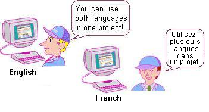

|
|
|
|
|
|
|
|
In Vijeo-Designer, you can apply different languages to the text that displays on your target machine. Because a single target machine can display text in various languages, you do not need to create and manage separate project files for each country where your product is manufactured. By setting up multiple languages and switching between them, you could save a significant amount of time and effort spent on the development and maintenance of projects.

System Language
System interfaces, such as the Vijeo-Designer Runtime Configuration menu and Runtime errors, support all languages—English, French, German, Italian, Spanish, Simplified Chinese, Portuguese, and Traditional Chinese.

User Application Language
At Runtime, you can switch the display of various elements on the panel—such as text objects, alarm messages, and text display parts—from one language to another.


You cannot switch user application languages for objects set up with Value Animation. Regardless of the language applied to the user application at run time, the object will display only the language and default font that were set up with the Value animation.
Changing the display language is not supported on the tablet/smartphone. The tablet/smartphone displays the default language only. If you want to display a different language on a tablet/smartphone application, from the Vijeo Designer editor, select a different default language then download the project again. The next time you view the application from your tablet/smartphone, it will display the selected language.
For information about the default language setting, see Section 20.2.6, Adding a User Application Language.
When you drag in Toolchest objects that use labels, make sure the font for the object uses the font that you want for all the user languages. If the text appears garbled, then the selected font does not support the test that you entered.
From the Vijeo-Designer Runtime Configuration Menu
In the Vijeo-Designer Runtime Configuration menu, you can switch from one language to another.
For more information, see Section 20.2.3, Switch to a Different System Language, and Section 20.2.8, Switch to a Different User Application Language.
When the User Application is Displayed At Runtime
At Runtime, you can use one of two methods to switch languages without having to open the Vijeo-Designer Runtime Configuration menu—with a switch or with a system variable.